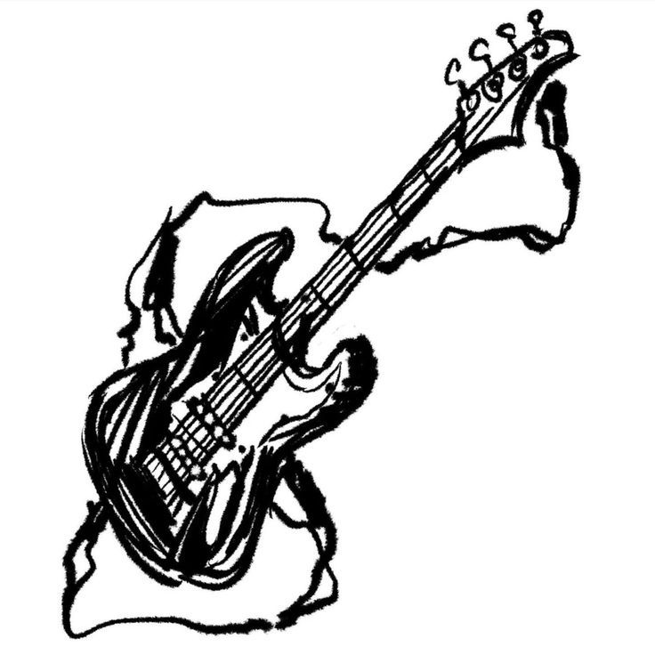

I know this probably doesn't look great because podcasts are usually associated with mysoginististic, but I promise that those aren't the only podcasts that exist and certainly aren't the ones I listen to.
One of my favorite podcasts is Jam mechanics(I also brought this up in the about page), its cohosted by Bug Hunter and The Narcissist Cookbook which can be found on Spotify, Youtube and Bandcamp. It's a songwriting podcasts with an ongoing fourth season, they recieve a prompt(the method varies by season, for example this season is wikipedia pages found by the other person) and are given three hours to create a song or demo. Then after the three hours, they go back and present their songs, giving some insight into the process or diving into lyrics. They release around every other Monday. Some of my favorite episodes are S4E3: An Urban Bird, S3E2: Socks Around My Ankles, S2E10: The Troppelganger, S2E6: A Feral Yeehaw, S1E10: The Great Toilet Heist, S1E9: Alpacas Can't Jump, and S1E2: Jumping Ra Rark
Another one of my top podcasts is Legends of Avantris, it's also in video form. Legends of Avantris is a group of seven people who play DnD together, some of my favorite campaigns are Stardust Rhapsody(overture and anthem), Once Upon a Witchlight, and edge of midnight, although all their campaigns are amazing and I would definitly reccomend them. Their campaigns span a lot of different genres, some being homebrew(self-created) while others being published modules, with ones that are more lighthearted and funny while others are more serious survival or horror campaigns. Not to mention, they have created their own modules, with one for Stardust Rhapsody being kickstarted right now. They can be found on Spotify and Youtube
I also often listen to Smosh Reddit Stories, Smosh itself is a youtube channel that's been going on for 20 years, one of the things that they started doing a couple years ago is reading reddit stories, giving their own opinions and making jokes. They can be found on Spotify and Youtube.
